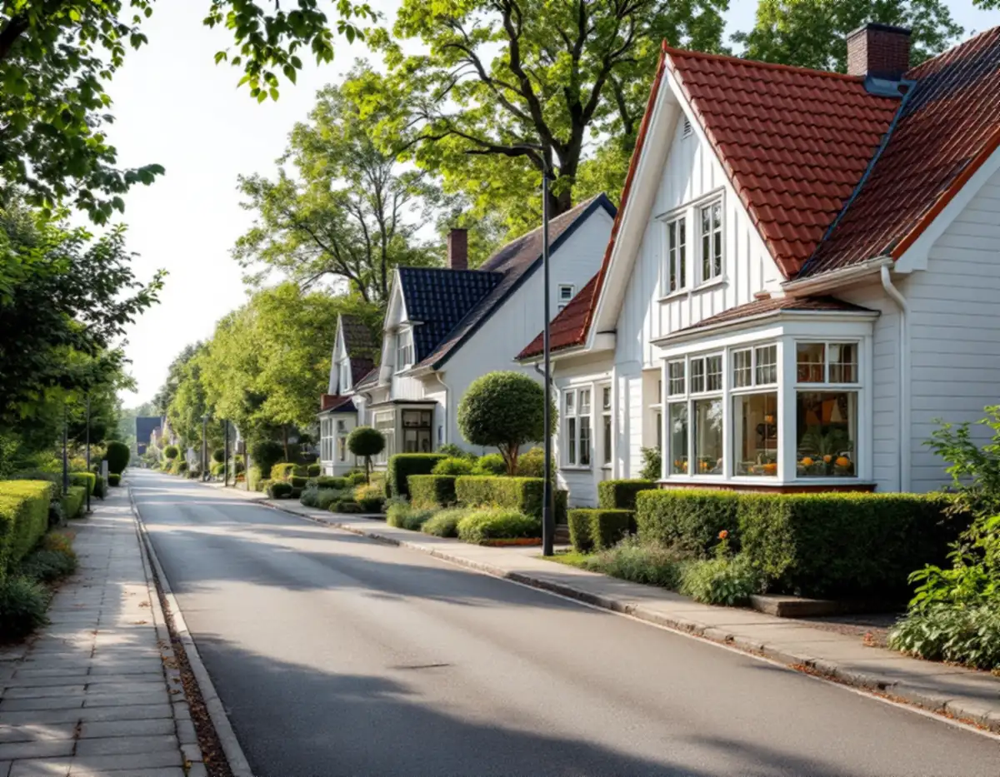
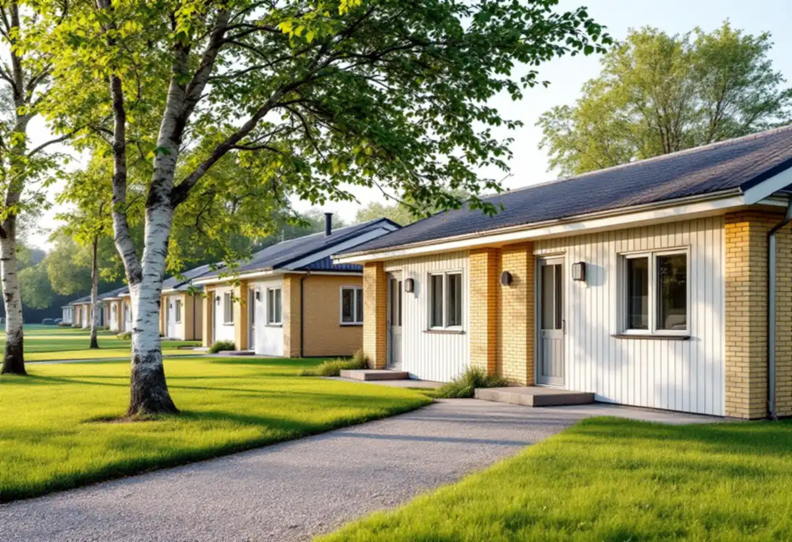

Område och klassning
Vi tittar i Stadsmuseets karta och detaljplanen och tar reda på om huset ingår i en grupp.
I Hässelby villastad finns drygt 5 000 småhus, byggda under i stort sett hela 1900-talet. Vid tunnelbanan i Hässelby strand och Hässelby gård ligger i stället radhus och kedjehus som ritades i grupp. En takrenovering i Hässelby börjar därför med att reda ut vilken sorts område huset står i.

Enligt Stockholms stads områdesfakta fanns det 5 009 bostäder i småhus i stadsdelen Hässelby villastad 2025, av totalt 7 029. Stadens minnesbok om Stor-Stockholms uppkomst berättar att tomtförsäljningen från Hässelby gård tog fart vid sekelskiftet 1900. Hässelby villastads köping bröts ut från Spånga 1926, och de först bosatta var renhållningsarbetare vid Lövsta.
Många köpte mark för handelsträdgårdar. En artikel från Stadsmuseet beskriver hur Hässelby på 1950-talet hade omkring hundra handelsträdgårdar, flest av alla platser i Sverige. Solbacken i kvarteret Ripbäret låg kvar från 1905 till 2008 och var den sista i Västerort.
Villastaden växte alltså fram sida vid sida med odlingarna, och bebyggelsen kom i omgångar. Stadens vägledning för småhusområden beskriver hur många villor i Hässelby villastad på 1960- och 70-talen ersattes av täta grupper av enhetliga småhus.

I stadens typologi räknas Hässelby villastad som villastad, där bebyggelsen var privat organiserad och därför blev brokigare än i stadens egna egnahemsområden. Trä var det vanligaste fasadmaterialet, och glasverandor, takkupor och snickarglädje gav variation. Tomtdelningar har sedan lagt till hus från senare tider.
För taken betyder det att grannhusen sällan har samma ålder eller material. Vi bedömer varje tak för sig: vad som ligger där i dag, vad som ligger under och hur tidigare kupor eller tillbyggnader har anslutits. Stadens råd för villastäderna är att ta tillvara eller återskapa karaktärsskapande material, kulörer och detaljer vid ombyggnad och renovering.
Läs mer om när det räcker med renovering och när taket behöver bytas.
Hässelby strand och Hässelby gård räknas i stadens vägledning till tunnelbanestäderna. Hässelby gård planerades samtidigt med Vällingby, som invigdes 1954 som den första tunnelbanestaden. Längst ut från centrum byggdes rad- och kedjehus i grupper, och i stadens tabell över småhusområden är både Hässelby strand och Hässelby gård markerade som kulturhistoriskt värdefulla miljöer.
Stadens vägledning nämner att man i många av områdena prövade nya material. Ett populärt var asbestcement, eternit, som i många fall har bytts ut. Ligger det gamla skivor kvar på ett tak eller på en takfot ska de rivas på rätt sätt, och vi bedömer materialet vid besiktningen.
Vägledningen beskriver hur tunnelbanestäderna fick högre hus närmast centrum och tunnelbanan och en nedtrappning mot grupper av rad- och kedjehus längst ut, med gångvägar och naturstråk mellan husen. Fasader i rött tegel var vanliga, men det förekom även puts och skivor i fibercement. Taken på en sådan länga byggdes samtidigt och åldras i samma takt.
I ett grupphusområde är det helheten som bär värdet. Ska ett radhus få nytt takmaterial eller ny kulör, tänk på att det förändrar hela längan. Bäst blir det om grannarna kommer överens om samma lösning.
Sedan 1 december 2025 krävs normalt inget bygglov för att byta takmaterial eller kulör på ett en- eller tvåbostadshus, enligt Boverket. Lov kan ändå krävas om detaljplanen har skyddsbestämmelser, om huset är särskilt värdefullt eller om området har utökad lovplikt.
Stockholms stad hänvisar till Stadsmuseets klassificeringskarta som en första kontroll. Är huset eller området markerat med blått eller grönt gäller utökad lovplikt, och då krävs bygglov även för sådant som annars är lovfritt. Gult eller grått, utan annat skydd, betyder att inget lov behövs. Mer om reglerna finns under bygglov vid takbyte.
Vi börjar på vinden och ser om underlagspappen har släppt, om läkten är rötskadad och om fukt har trängt in vid skorsten eller kupor. Skadad råspont byts innan nytt underlag läggs. Hela pannor läggs tillbaka på ny läkt, och plåten vid skorsten, ränndalar och takfot görs om i samma arbete.
På grupphusen samordnar vi gärna med grannarna, så att takfot, nock och plåtdetaljer blir lika. Se även takläggare i Hässelby och målare i Hässelby om vindskivor och takfot ska målas.
Vi tittar i Stadsmuseets karta och detaljplanen och tar reda på om huset ingår i en grupp.
Underlag, läkt och anslutningar kontrolleras inifrån.
Gamla fibercementskivor identifieras och rivningen planeras därefter.
Pannorna tas ner, papp och läkt byts och hela pannor läggs tillbaka.
Skorsten, ränndalar och takfot får nya beslag.
Vi går igenom taket med dig och dokumenterar det som gjorts.
Rotavdraget är 30 procent av arbetskostnaden. Det får vara högst 50 000 kr per person och år, och tillsammans med rutavdrag högst 75 000 kr. Material och resor ingår inte, och vi drar av beloppet direkt på fakturan, enligt Skatteverket.
Gör flera grannar i en radhuslänga sina tak samtidigt får var och en avdrag för sitt eget hus, så länge de äger huset när arbetet görs. Läs mer om rotavdrag för takarbete.
Kostnaden i Hässelby påverkas av takets storlek och skick, hur mycket råspont som behöver bytas, om gamla fibercementskivor ska rivas och om flera hus i en länga görs samtidigt. Läs mer om vad en takrenovering kostar eller räkna på ditt tak i kalkylatorn för takbyte.
Takbyte, besiktning och plåtarbeten.
Takläggare i Hässelby →Så fungerar en omläggning.
Takrenovering och takomläggning →Det här styr priset.
Vad kostar en takrenovering? →Räkna på takytan och ROT.
Takbyte-kalkylator →Solhem, Bromsten, Flysta och Sundby.
Takrenovering i Spånga →Trädgårdsstäder, tegel och funkistak.
Takrenovering i Bromma →Jakobsberg, Viksjö och Kallhäll.
Takrenovering i Järfälla →